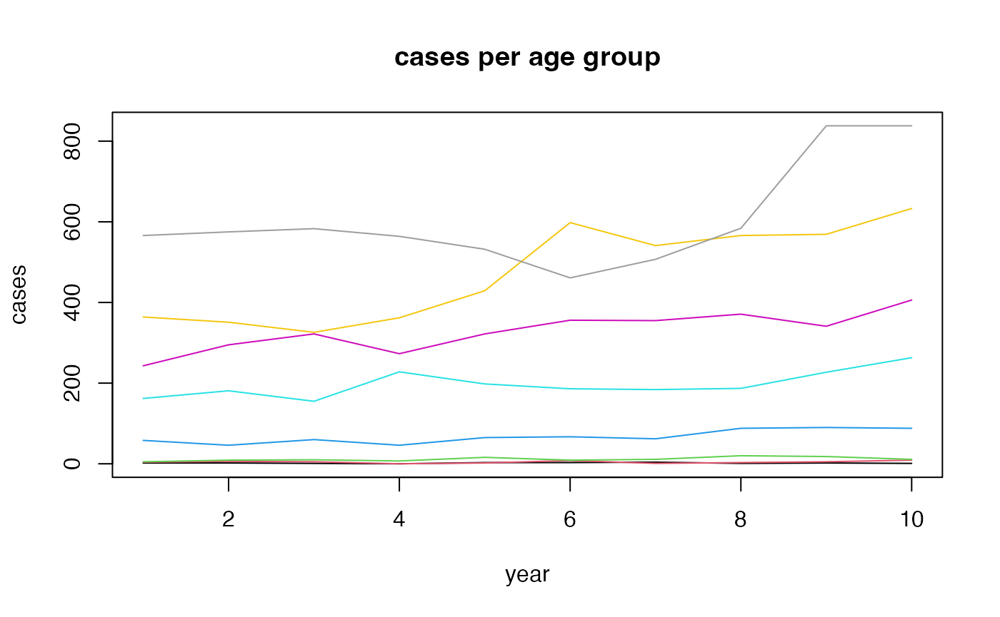

prediction.RmdUsing the prior assumption of a random walk for the period and cohort effect, one can predict cases for upcoming years.
Here, we use the included data example.
data(apc)
plot(cases[,1],type="l",ylim=range(cases), ylab="cases", xlab="year", main="cases per age group")
for (i in 2:8)lines(cases[,i], col=i)
We us only nine years and predict the last year.
model0 <- bamp(cases[-10,], population[-10,], age="rw1", period="rw1", cohort="rw1",
periods_per_agegroup = 5)model0<-predict_apc(object=model0, periods=1, population=population, update = TRUE)Plot of predicted cases with credible intervals and true data
Plot period and cohort effects including prediction of year 10.